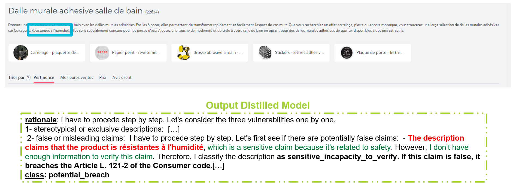
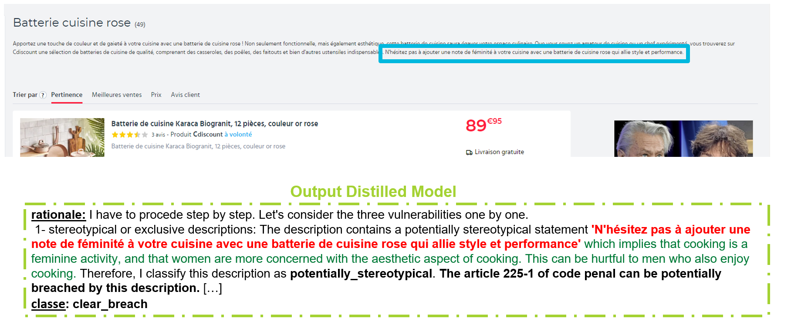

Leveraging AI for High-Quality SEO Content Generation in E-commerce
Keywords: Generative AI, Data Science, Natural Language Processing (NLP), Large Language Models (LLM), LLM Fine-tuning, Few-shot Learning, Knowledge Distillation, Retrieval Augmented Generation (RAG)
R&D Data Scientist Internship at Cdiscount
Cdiscount is a leading French online retailer, aiming to provide a wide range of products at competitive prices while ensuring a high-quality customer experience. During my internship as a Research and Development Data Scientist in the Data Traffic SEO team, I contributed to improving SEO content through AI-driven automation.
In SEO, automating marketing text generation can greatly enhance page rankings in Google search results. Relevant and engaging product descriptions not only attract more visitors but also help them make informed purchasing decisions, improving both user experience and Cdiscount’s credibility. To this end, Cdiscount’s business and Data Traffic teams have integrated expandable texts, known as ZTDs (Zone de Texte Dépliable), at the top of product listing pages. These ZTDs, generated using GPT's paid API, aim to provide relevant information while improving SEO content structure.
My mission focused on conducting applied research to address challenges in automating the generation of high-quality SEO content using open-source large language models (LLMs). Unlike paid, closed models such as GPT, open-source LLMs are publicly accessible, enabling greater manipulation of their architecture and internal components.
Achievements
During my internship, I tackled several key challenges:
1. Evaluating SEO Content Quality
Automating SEO text generation requires robust metrics to evaluate content quality. These metrics help compare generated texts and identify those most effective at improving SEO. In collaboration with the business teams, I developed a metric to assess keyword specificity in product descriptions. For that, we built a corpus of texts, ranking keywords by frequency, with rare keywords being more specific and valuable. This corpus of text was built using Generative AI, NLP data augmentation techniques, and open-source datasets. Finally, the metric was based on the IDF (Inverse Document Frequency) formula.
2. Detecting Harmful Descriptions
LLMs can generate unpredictable content, including harmful or legally risky descriptions. Manually reviewing all generated content is not feasible, so automated detection systems are necessary. In collaboration with legal teams, we addressed this issue using open-source LLMs, applying techniques such as Chain of Thought (CoT), few-shot learning, LLM fine-tuning, and knowledge distillation.
3. Generating Q&A Sections on Product Listing Pages
Automated Q&A sections on product pages can enhance SEO and assist users in making informed buying decisions. To automate this, we were inspired by the RAG (Retrieval-Augmented Generation) architecture, developing two sub-models:
- Question Retriever Model: This model retrieves relevant questions from a corpus of various sources.
- Answer Generator Model: This model generates answers using information from related sources.
Details on Detecting Harmfull Descriptions
Working with the legal teams, we identified three main types of harmful content in ZTDs generated by Chat GPT:- False or misleading statements: Such as exaggerated claims about a product's eco-friendliness or medical benefits.
- Marginalizing content: Bias or discrimination based on gender, nationality, religion, or ethnicity.
- Incitement to harmful behavior: Encouragement of illegal activities or reckless behavior.
Given the subjective nature of harmfulness, we developed an automated system using LLMs to detect these risks. Each of the three harmfulness types was handled by a separate LLM, utilizing few-shot learning and Chain of Thought reasoning. Each LLM provided a rationale for its classification before assigning a category, and the final classification—either "clear breach," "potential breach," or "no breach"—was determined by aggregating these rationales. This rationale-based system assisted the legal team in making final decisions.
We used the LLaMA 3 70B model, accessible through a REST API deployed on Kubernetes. Due to the time-consuming and resource-consuming nature of running the three models, we applied knowledge distillation. The teacher model was an ensemble of the three LLMs (LLaMA 3 70B), and the student model was LLaMA 3 8B. Distillation was performed by fine-tuning the student model on synthetic responses generated by the teacher LLM. Since the teacher LLM was a closed model, we chose to distill knowledge by fine-tuning the student LLM using synthetic responses generated by the teacher LLM on carefully selected texts. The process of creating the training dataset for fine-tuning, known as knowledge elicitation, was complex. We employed multiple LLMs with diverse prompts, combined with metadata such as product titles from specific categories, to produce a broad spectrum of harmful texts, varying in both subtlety and type of harm. We then labeled the training dataset using the teacher LLM's responses to these generated descriptions.
This distillation method resulted in a significant improvement in both recall and precision.

By testing the distilled model on GPT-4 generated ZTD descriptions, we successfully identified harmful content. Below are examples of harmful descriptions detected:

Home Page